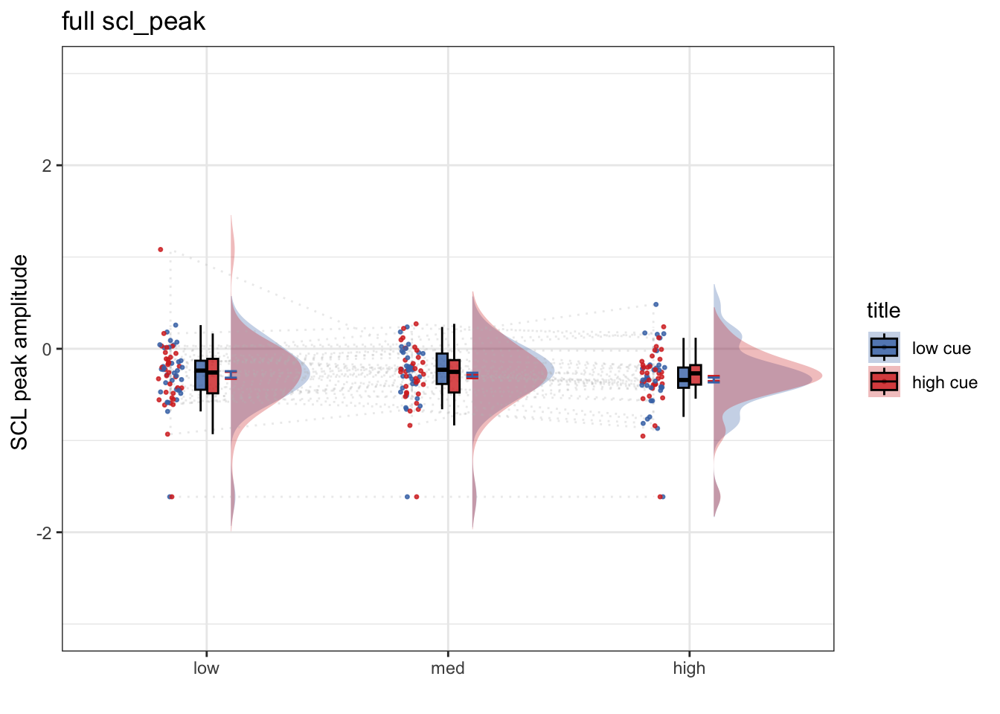
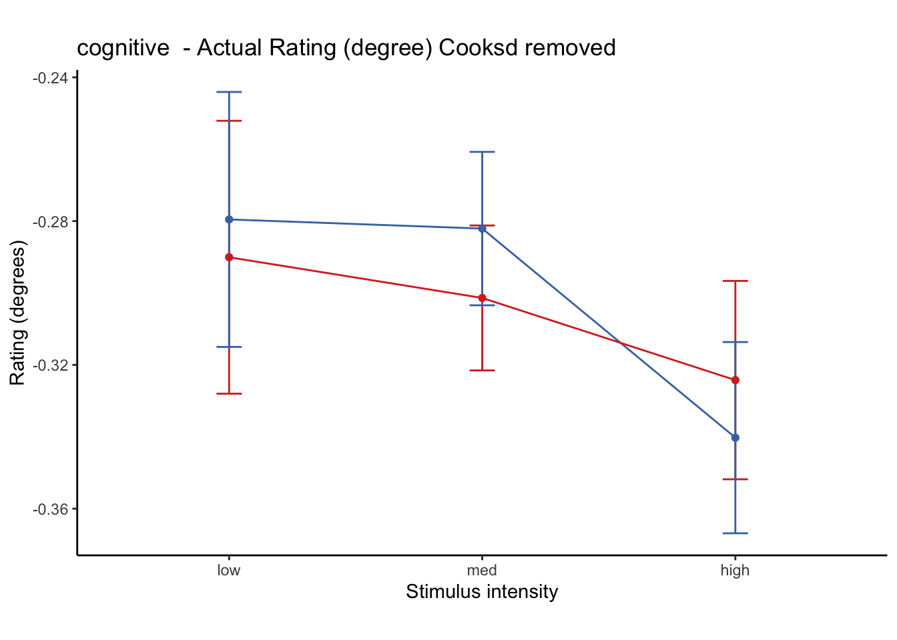
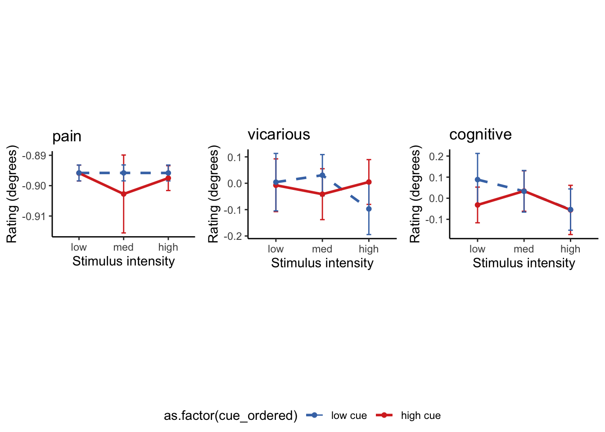

Chapter 40 [physio] scl ~ cue*stim {#scl}
title: "model09_iv-cue-stim_dv-scl"
author: "Heejung Jung"
date: '2022-09-17'40.1 overview
TODO: split data into task (full -> P, v, c subset) push code to git create code map log transform * SCL: mean signal * SCR: log transform
40.2 Overview
The purpose of this notebook is to analyze biopac phasic data. Data has been preprocessed with neurokit
We load a dataframe that contains the following outcome measures: ‘Event_Onset’, ‘EDA_Peak_Amplitude’, ‘EDA_SCR’, ‘SCR_Peak_Amplitude’, ‘SCR_Peak_Amplitude_Time’, ‘SCR_RiseTime’, ‘SCR_RecoveryTime’
We model this as a function of “cue” and “stimulus intensity”, while allowing for random effects from participants.
main_dir = dirname(dirname(getwd()))
datadir = file.path(main_dir, "analysis", "physio", "physio01_SCL")
analysis_dir <- file.path(main_dir, "analysis", "mixedeffect", "model51_iv-cue-stim_dv-scl", as.character(Sys.Date()))
dir.create(analysis_dir, showWarnings = FALSE, recursive = TRUE)ylab <- "ratings (degree)"
subject <- "subject"
exclude <- "sub-0999|sub-0001|sub-0002|sub-0003|sub-0004|sub-0005|sub-0006|sub-0007|sub-0008|sub-0009|sub-0010|sub-0011"
subject_varkey <- "src_subject_id"# parameters _____________________________________ # nolint
# phasic = read.csv("/Volumes/spacetop_projects_social/data/physio/physio02_preproc/group_epochstart-0_epochend-9_physio-phasic.csv")
# tonic = read.csv("/Volumes/spacetop_projects_social/data/physio/physio02_preproc/group_epochstart--1_epochend-8_physio-scl.csv")
# INPUT:
# * taskname (e.g. pain, cognitive, vicarious)
# * subject_varkey (e.g. src_subject_id or subject)
# A. load data ______________________________________________________________
taskname = "*"
filename <- paste0("*_runtype-", taskname,"_epochstart--1_epochend-20_physio-scl.csv")
common_path <- Sys.glob(file.path(datadir, "sub-*", "ses-*", filename
))
filter_path <- common_path[!str_detect(common_path, pattern = exclude)]
# scl <- do.call("rbind", lapply(filter_path, FUN = function(files) {
# read.csv(files)
# }))
scl <- do.call("rbind.fill", lapply(filter_path, FUN = function(files) {
read.csv(files)
}))
is.nan.data.frame <- function(x) {
do.call(cbind, lapply(x, is.nan))
}
scl[is.nan(scl)] <- NA
scl[, "subject"] <- factor(scl[, subject_varkey])
# B. plot expect rating NA ___________________________________________________This is the data that we will use
## X src_subject_id session_id param_task_name param_run_num param_cue_type
## 1 0 15 1 pain 1 high_cue
## 2 1 15 1 pain 1 high_cue
## 3 2 15 1 pain 1 low_cue
## 4 3 15 1 pain 1 high_cue
## 5 4 15 1 pain 1 high_cue
## 6 5 15 1 pain 1 low_cue
## param_stimulus_type param_cond_type trial_num trial_order iv_stim
## 1 med_stim 5 1 0 med_stim
## 2 low_stim 4 2 1 low_stim
## 3 med_stim 2 3 2 med_stim
## 4 high_stim 6 4 3 high_stim
## 5 high_stim 6 5 4 high_stim
## 6 high_stim 3 6 5 high_stim
## mean_signal subject
## 1 -2.630136 15
## 2 -2.629874 15
## 3 -2.629820 15
## 4 -2.629914 15
## 5 -2.629779 15
## 6 -2.629820 15#contrast code 1 linear
scl$stim_con_linear[scl$param_stimulus_type == "low_stim"] <- -0.5
scl$stim_con_linear[scl$param_stimulus_type == "med_stim"] <- 0
scl$stim_con_linear[scl$param_stimulus_type == "high_stim"] <- 0.5
# contrast code 2 quadratic
scl$stim_con_quad[scl$param_stimulus_type == "low_stim"] <- -0.33
scl$stim_con_quad[scl$param_stimulus_type == "med_stim"] <- 0.66
scl$stim_con_quad[scl$param_stimulus_type == "high_stim"] <- -0.33
# social cue contrast
scl$social_cue[scl$param_cue_type == 'low_cue'] <- -0.5 # social influence task
scl$social_cue[scl$param_cue_type == 'high_cue'] <- 0.5 # no influence task
scl$cue_factor = factor(scl$social_cue)# parameters ___________________________________________________________________
scl$subject = factor(scl$src_subject_id)
#subject_varkey <- "subject"
iv <- "cue_factor"
stim_con1 = "stim_con_linear"
stim_con2 = "stim_con_quad"
dv <- "mean_signal" # DON"T USE EDA_Peak_Amplitude (misleading)
iv_keyword <- "cue-stim"
dv_keyword <- "scl_peak"
xlab <- ""
taskname <- "full"
#ylim = c(-1,1)
#tonic_task = 40.2.1 full model with all tasks
fullmodel = lmer(mean_signal ~ 1+ cue_factor*stim_con_linear +cue_factor*stim_con_quad + (1 |src_subject_id), data = scl)
summary(fullmodel)## Linear mixed model fit by REML. t-tests use Satterthwaite's method [
## lmerModLmerTest]
## Formula: mean_signal ~ 1 + cue_factor * stim_con_linear + cue_factor *
## stim_con_quad + (1 | src_subject_id)
## Data: scl
##
## REML criterion at convergence: 15915.5
##
## Scaled residuals:
## Min 1Q Median 3Q Max
## -3.2732 -0.5607 0.0674 0.6042 3.5634
##
## Random effects:
## Groups Name Variance Std.Dev.
## src_subject_id (Intercept) 0.04586 0.2142
## Residual 1.09204 1.0450
## Number of obs: 5410, groups: src_subject_id, 33
##
## Fixed effects:
## Estimate Std. Error df t value Pr(>|t|)
## (Intercept) -2.806e-01 4.319e-02 3.019e+01 -6.497 3.4e-07
## cue_factor0.5 -3.146e-03 2.841e-02 5.364e+03 -0.111 0.9119
## stim_con_linear -8.748e-02 4.921e-02 5.364e+03 -1.778 0.0755
## stim_con_quad 3.734e-02 4.304e-02 5.364e+03 0.868 0.3857
## cue_factor0.5:stim_con_linear 9.887e-02 6.960e-02 5.364e+03 1.420 0.1555
## cue_factor0.5:stim_con_quad -1.824e-02 6.089e-02 5.364e+03 -0.300 0.7645
##
## (Intercept) ***
## cue_factor0.5
## stim_con_linear .
## stim_con_quad
## cue_factor0.5:stim_con_linear
## cue_factor0.5:stim_con_quad
## ---
## Signif. codes: 0 '***' 0.001 '**' 0.01 '*' 0.05 '.' 0.1 ' ' 1
##
## Correlation of Fixed Effects:
## (Intr) c_f0.5 stm_cn_l stm_cn_q c_fctr0.5:stm_cn_l
## cue_fctr0.5 -0.329
## stim_cn_lnr 0.000 0.000
## stim_con_qd 0.000 0.000 0.000
## c_fctr0.5:stm_cn_l 0.000 0.000 -0.707 0.000
## c_fctr0.5:stm_cn_q 0.000 0.000 0.000 -0.707 0.000print(summary(fullmodel))## Linear mixed model fit by REML. t-tests use Satterthwaite's method [
## lmerModLmerTest]
## Formula: mean_signal ~ 1 + cue_factor * stim_con_linear + cue_factor *
## stim_con_quad + (1 | src_subject_id)
## Data: scl
##
## REML criterion at convergence: 15915.5
##
## Scaled residuals:
## Min 1Q Median 3Q Max
## -3.2732 -0.5607 0.0674 0.6042 3.5634
##
## Random effects:
## Groups Name Variance Std.Dev.
## src_subject_id (Intercept) 0.04586 0.2142
## Residual 1.09204 1.0450
## Number of obs: 5410, groups: src_subject_id, 33
##
## Fixed effects:
## Estimate Std. Error df t value Pr(>|t|)
## (Intercept) -2.806e-01 4.319e-02 3.019e+01 -6.497 3.4e-07
## cue_factor0.5 -3.146e-03 2.841e-02 5.364e+03 -0.111 0.9119
## stim_con_linear -8.748e-02 4.921e-02 5.364e+03 -1.778 0.0755
## stim_con_quad 3.734e-02 4.304e-02 5.364e+03 0.868 0.3857
## cue_factor0.5:stim_con_linear 9.887e-02 6.960e-02 5.364e+03 1.420 0.1555
## cue_factor0.5:stim_con_quad -1.824e-02 6.089e-02 5.364e+03 -0.300 0.7645
##
## (Intercept) ***
## cue_factor0.5
## stim_con_linear .
## stim_con_quad
## cue_factor0.5:stim_con_linear
## cue_factor0.5:stim_con_quad
## ---
## Signif. codes: 0 '***' 0.001 '**' 0.01 '*' 0.05 '.' 0.1 ' ' 1
##
## Correlation of Fixed Effects:
## (Intr) c_f0.5 stm_cn_l stm_cn_q c_fctr0.5:stm_cn_l
## cue_fctr0.5 -0.329
## stim_cn_lnr 0.000 0.000
## stim_con_qd 0.000 0.000 0.000
## c_fctr0.5:stm_cn_l 0.000 0.000 -0.707 0.000
## c_fctr0.5:stm_cn_q 0.000 0.000 0.000 -0.707 0.000cooksd <- cooks.distance(fullmodel)
influential <- as.numeric(names(cooksd)[
(cooksd > (4 / as.numeric(length(unique(scl$subject)))))])
data_screen <- scl[-influential, ]
# reordering for plots _________________________________________________________
scl$cue_name[scl$param_cue_type == "high_cue"] <- "high cue"
scl$cue_name[scl$param_cue_type == "low_cue"] <- "low cue" # no influence task
scl$stim_name[scl$param_stimulus_type == "high_stim"] <- "high" # no influence task
scl$stim_name[scl$param_stimulus_type == "med_stim"] <- "med" # no influence task
scl$stim_name[scl$param_stimulus_type == "low_stim"] <- "low" # no influence task
scl$stim_ordered <- factor(scl$stim_name, levels=c("low", "med", "high"))
scl$cue_ordered <- factor(scl$cue_name, levels=c("low cue", "high cue"))
model_iv1 = "stim_ordered";model_iv2 = "cue_ordered"
# summary statistics for plots _________________________________________________
subjectwise <- meanSummary(scl, c("subject", model_iv1, model_iv2), dv)
try <- na.omit(subjectwise)
groupwise <- summarySEwithin(
data = try,
measurevar = "mean_per_sub", # variable created from above
withinvars = c(model_iv1, model_iv2), # iv
idvar = "subject"
)##
## Attaching package: 'raincloudplots'## The following object is masked _by_ '.GlobalEnv':
##
## GeomFlatViolinsubjectwise_mean <- "mean_per_sub";
group_mean <- "mean_per_sub_norm_mean"
se <- "se";
ggtitle <- paste(taskname, dv_keyword);
title <- paste(taskname, " - RT")
xlab <- "";
ylab <- "SCL peak amplitude ";
w = 5; h = 3;
ylim = c(-3,3)
if (any(startsWith(dv_keyword, c("expect", "Expect")))) {
color <- c("#1B9E77", "#D95F02")
} else {
color <- c("#4575B4", "#D73027")
}
plot_savefname <- file.path(
analysis_dir,
paste("raincloud_task-", taskname,
"_iv-", iv_keyword,"_dv-", dv_keyword,
"_", as.character(Sys.Date()), ".png",
sep = ""
)
)
plot_rainclouds_twofactor(
try, groupwise,
model_iv1, model_iv2, subjectwise_mean, group_mean, se, "subject",
ggtitle, title, xlab, ylab, task_name, ylim,
w, h, dv_keyword, color, plot_savefname
)## Loading required package: rlang##
## Attaching package: 'rlang'## The following object is masked _by_ '.GlobalEnv':
##
## %||%## The following objects are masked from 'package:sjlabelled':
##
## as_character, as_label## The following object is masked from 'package:sjmisc':
##
## is_empty## The following objects are masked from 'package:purrr':
##
## %@%, flatten, flatten_chr, flatten_dbl, flatten_int, flatten_lgl,
## flatten_raw, invoke, splice##
## Attaching package: 'PupillometryR'## The following object is masked _by_ '.GlobalEnv':
##
## geom_flat_violin## Warning in geom_line(data = subjectwise, aes(group = .data[[subject]], y
## = .data[[sub_mean]], : Ignoring unknown aesthetics: fill## Warning: Duplicated aesthetics after name standardisation: width## Warning: Using the `size` aesthietic with geom_polygon was deprecated in ggplot2 3.4.0.
## ℹ Please use the `linewidth` aesthetic instead.
40.2.2 PAIN
pain = lmer(mean_signal ~ 1+ cue_factor + stim_con_linear + stim_con_quad + cue_factor:stim_con_linear + cue_factor:stim_con_quad + (1 |src_subject_id), data = scl[scl$param_task_name == 'pain',])
summary(pain)## Linear mixed model fit by REML. t-tests use Satterthwaite's method [
## lmerModLmerTest]
## Formula: mean_signal ~ 1 + cue_factor + stim_con_linear + stim_con_quad +
## cue_factor:stim_con_linear + cue_factor:stim_con_quad + (1 |
## src_subject_id)
## Data: scl[scl$param_task_name == "pain", ]
##
## REML criterion at convergence: 5544.5
##
## Scaled residuals:
## Min 1Q Median 3Q Max
## -2.25530 -0.70747 -0.07401 0.67503 2.79435
##
## Random effects:
## Groups Name Variance Std.Dev.
## src_subject_id (Intercept) 0.4583 0.677
## Residual 1.4332 1.197
## Number of obs: 1702, groups: src_subject_id, 32
##
## Fixed effects:
## Estimate Std. Error df t value Pr(>|t|)
## (Intercept) -8.843e-01 1.272e-01 3.387e+01 -6.953 5.23e-08
## cue_factor0.5 -3.065e-03 5.804e-02 1.665e+03 -0.053 0.958
## stim_con_linear -1.283e-05 1.005e-01 1.665e+03 0.000 1.000
## stim_con_quad 2.142e-05 8.788e-02 1.665e+03 0.000 1.000
## cue_factor0.5:stim_con_linear -2.133e-03 1.421e-01 1.665e+03 -0.015 0.988
## cue_factor0.5:stim_con_quad -5.953e-03 1.244e-01 1.665e+03 -0.048 0.962
##
## (Intercept) ***
## cue_factor0.5
## stim_con_linear
## stim_con_quad
## cue_factor0.5:stim_con_linear
## cue_factor0.5:stim_con_quad
## ---
## Signif. codes: 0 '***' 0.001 '**' 0.01 '*' 0.05 '.' 0.1 ' ' 1
##
## Correlation of Fixed Effects:
## (Intr) c_f0.5 stm_cn_l stm_cn_q c_fctr0.5:stm_cn_l
## cue_fctr0.5 -0.228
## stim_cn_lnr 0.000 0.000
## stim_con_qd 0.000 0.000 0.000
## c_fctr0.5:stm_cn_l 0.000 0.001 -0.707 0.000
## c_fctr0.5:stm_cn_q 0.000 0.000 0.000 -0.707 -0.00140.2.3 VICARIOUS
vicarious = lmer(mean_signal ~ 1+ cue_factor + stim_con_linear + stim_con_quad + cue_factor:stim_con_linear + cue_factor:stim_con_quad + (1 |src_subject_id), data = scl[scl$param_task_name == 'vicarious',])## boundary (singular) fit: see help('isSingular')summary(vicarious)## Linear mixed model fit by REML. t-tests use Satterthwaite's method [
## lmerModLmerTest]
## Formula: mean_signal ~ 1 + cue_factor + stim_con_linear + stim_con_quad +
## cue_factor:stim_con_linear + cue_factor:stim_con_quad + (1 |
## src_subject_id)
## Data: scl[scl$param_task_name == "vicarious", ]
##
## REML criterion at convergence: 4352.9
##
## Scaled residuals:
## Min 1Q Median 3Q Max
## -4.8156 -0.6603 -0.0107 0.5850 4.2165
##
## Random effects:
## Groups Name Variance Std.Dev.
## src_subject_id (Intercept) 0.0000 0.0000
## Residual 0.6013 0.7755
## Number of obs: 1860, groups: src_subject_id, 32
##
## Fixed effects:
## Estimate Std. Error df t value Pr(>|t|)
## (Intercept) -2.925e-02 2.543e-02 1.854e+03 -1.150 0.2503
## cue_factor0.5 7.191e-03 3.596e-02 1.854e+03 0.200 0.8415
## stim_con_linear -1.212e-01 6.229e-02 1.854e+03 -1.945 0.0519
## stim_con_quad 6.926e-02 5.449e-02 1.854e+03 1.271 0.2038
## cue_factor0.5:stim_con_linear 1.668e-01 8.809e-02 1.854e+03 1.894 0.0584
## cue_factor0.5:stim_con_quad -8.808e-02 7.705e-02 1.854e+03 -1.143 0.2532
##
## (Intercept)
## cue_factor0.5
## stim_con_linear .
## stim_con_quad
## cue_factor0.5:stim_con_linear .
## cue_factor0.5:stim_con_quad
## ---
## Signif. codes: 0 '***' 0.001 '**' 0.01 '*' 0.05 '.' 0.1 ' ' 1
##
## Correlation of Fixed Effects:
## (Intr) c_f0.5 stm_cn_l stm_cn_q c_fctr0.5:stm_cn_l
## cue_fctr0.5 -0.707
## stim_cn_lnr 0.000 0.000
## stim_con_qd 0.000 0.000 0.000
## c_fctr0.5:stm_cn_l 0.000 0.000 -0.707 0.000
## c_fctr0.5:stm_cn_q 0.000 0.000 0.000 -0.707 0.000
## optimizer (nloptwrap) convergence code: 0 (OK)
## boundary (singular) fit: see help('isSingular')40.2.4 COGNITIVE
cognitive = lmer(mean_signal ~ 1+ cue_factor + stim_con_linear + stim_con_quad + cue_factor:stim_con_linear + cue_factor:stim_con_quad + (1 |src_subject_id), data = scl[scl$param_task_name == 'cognitive',])## boundary (singular) fit: see help('isSingular')summary(cognitive)## Linear mixed model fit by REML. t-tests use Satterthwaite's method [
## lmerModLmerTest]
## Formula: mean_signal ~ 1 + cue_factor + stim_con_linear + stim_con_quad +
## cue_factor:stim_con_linear + cue_factor:stim_con_quad + (1 |
## src_subject_id)
## Data: scl[scl$param_task_name == "cognitive", ]
##
## REML criterion at convergence: 4396.1
##
## Scaled residuals:
## Min 1Q Median 3Q Max
## -3.6901 -0.6669 -0.0596 0.6266 3.7594
##
## Random effects:
## Groups Name Variance Std.Dev.
## src_subject_id (Intercept) 0.0000 0.0000
## Residual 0.6251 0.7906
## Number of obs: 1848, groups: src_subject_id, 31
##
## Fixed effects:
## Estimate Std. Error df t value Pr(>|t|)
## (Intercept) 7.303e-03 2.601e-02 1.842e+03 0.281 0.7789
## cue_factor0.5 -1.542e-02 3.678e-02 1.842e+03 -0.419 0.6750
## stim_con_linear -1.342e-01 6.371e-02 1.842e+03 -2.107 0.0353
## stim_con_quad 3.963e-02 5.573e-02 1.842e+03 0.711 0.4771
## cue_factor0.5:stim_con_linear 1.225e-01 9.010e-02 1.842e+03 1.360 0.1741
## cue_factor0.5:stim_con_quad 3.694e-02 7.881e-02 1.842e+03 0.469 0.6394
##
## (Intercept)
## cue_factor0.5
## stim_con_linear *
## stim_con_quad
## cue_factor0.5:stim_con_linear
## cue_factor0.5:stim_con_quad
## ---
## Signif. codes: 0 '***' 0.001 '**' 0.01 '*' 0.05 '.' 0.1 ' ' 1
##
## Correlation of Fixed Effects:
## (Intr) c_f0.5 stm_cn_l stm_cn_q c_fctr0.5:stm_cn_l
## cue_fctr0.5 -0.707
## stim_cn_lnr 0.000 0.000
## stim_con_qd 0.000 0.000 0.000
## c_fctr0.5:stm_cn_l 0.000 0.000 -0.707 0.000
## c_fctr0.5:stm_cn_q 0.000 0.000 0.000 -0.707 0.000
## optimizer (nloptwrap) convergence code: 0 (OK)
## boundary (singular) fit: see help('isSingular')40.2.5 TASKWISE PLOTS
combined_se_calc_cooksd = data.frame()
for (taskname in c( "pain", "vicarious", "cognitive")) { #"pain",
ggtitle <- paste(taskname, " - SCL signal")
title <- paste(taskname, " - EDA")
subject <- "subject"
print(taskname)
data = scl[scl$param_task_name == taskname,]
w <- 10
h <- 6
# [ CONTRASTS ] ________________________________________________________________________________ # nolint
# contrast code ________________________________________
data$stim[data$param_stimulus_type == "low_stim"] <- -0.5 # social influence task
data$stim[data$param_stimulus_type == "med_stim"] <- 0 # no influence task
data$stim[data$param_stimulus_type == "high_stim"] <- 0.5 # no influence task
data$stim_factor <- factor(data$param_stimulus_type)
data$cue_factor <- factor(data$param_cue_type)
# contrast code 1 linear
data$stim_con_linear[data$param_stimulus_type == "low_stim"] <- -0.5
data$stim_con_linear[data$param_stimulus_type == "med_stim"] <- 0
data$stim_con_linear[data$param_stimulus_type == "high_stim"] <- 0.5
# contrast code 2 quadratic
data$stim_con_quad[data$param_stimulus_type == "low_stim"] <- -0.33
data$stim_con_quad[data$param_stimulus_type == "med_stim"] <- 0.66
data$stim_con_quad[data$param_stimulus_type == "high_stim"] <- -0.33
# social cude contrast
data$social_cue[data$param_cue_type == "low_cue"] <- -0.5 # social influence task
data$social_cue[data$param_cue_type == "high_cue"] <- 0.5 # no influence task
data$cue_factor = factor(data$social_cue)
data$subject = factor(data$src_subject_id)
stim_con1 <- "stim_con_linear"
stim_con2 <- "stim_con_quad"
iv1 <- "cue_factor"
dv <- "mean_signal"
dv_keyword <- "EDA-scl-mean-signal"
# [ MODEL ] _________________________________________________ # nolint
model_savefname <- file.path(
analysis_dir,
paste("lmer_task-", taskname,
"_rating-", dv_keyword,
"_", as.character(Sys.Date()), "_cooksd.txt",
sep = ""
)
)
cooksd <- lmer_twofactor_cooksd_fix(
data = data, taskname = taskname, iv = iv1, stim_con1 = stim_con1, stim_con2 = stim_con2, dv = dv,
subject_keyword = "subject", dv_keyword = dv_keyword, model_savefname = model_savefname, effects = 'random_intercept', print_lmer_output = TRUE
)
influential <- as.numeric(names(cooksd)[
(cooksd > (4 / as.numeric(length(unique(data$src_subject_id)))))
])
data_screen <- data[-influential, ]
data_screen <- data
# [ PLOT ] reordering for plots _________________________ # nolint
data_screen$cue_name[data_screen$param_cue_type == "high_cue"] <- "high cue"
data_screen$cue_name[data_screen$param_cue_type == "low_cue"] <- "low cue"
data_screen$stim_name[data_screen$param_stimulus_type == "high_stim"] <- "high"
data_screen$stim_name[data_screen$param_stimulus_type == "med_stim"] <- "med"
data_screen$stim_name[data_screen$param_stimulus_type == "low_stim"] <- "low"
# DATA$levels_ordered <- factor(DATA$param_stimulus_type, levels=c("low", "med", "high"))
data_screen$stim_ordered <- factor(
data_screen$stim_name,
levels = c("low", "med", "high")
)
data_screen$cue_ordered <- factor(
data_screen$cue_name,
levels = c("low cue", "high cue")
)
model_iv1 <- "stim_ordered"
model_iv2 <- "cue_ordered"
# [ PLOT ] calculate mean and se _________________________
actual_subjectwise <- meanSummary(
data_screen,
c(subject, model_iv1, model_iv2), dv
)
actual_groupwise <- summarySEwithin(
data = actual_subjectwise,
measurevar = "mean_per_sub",
withinvars = c(model_iv1, model_iv2), idvar = subject
)
actual_groupwise$task <- taskname
# https://stackoverflow.com/questions/29402528/append-data-frames-together-in-a-for-loop/29419402
combined_se_calc_cooksd <- rbind(combined_se_calc_cooksd, actual_groupwise)
# if(any(startsWith(dv_keyword, c("expect", "Expect")))){color = c( "#1B9E77", "#D95F02")}else{color=c( "#4575B4", "#D73027")} # if keyword starts with
# print("groupwisemean")
# [ PLOT ] calculate mean and se ----------------------------------------------------------------------------
sub_mean <- "mean_per_sub"
group_mean <- "mean_per_sub_norm_mean"
se <- "se"
subject <- "subject"
ggtitle <- paste(taskname, " - Actual Rating (degree) Cooksd removed")
title <- paste(taskname, " - Actual")
xlab <- ""
ylab <- "ratings (degree)"
ylim <- c(-10,190)
dv_keyword <- "actual"
if (any(startsWith(dv_keyword, c("expect", "Expect")))) {
color <- c("#1B9E77", "#D95F02")
} else {
color <- c("#4575B4", "#D73027")
} # if keyword starts with
plot_savefname <- file.path(
analysis_dir,
paste("raincloud_task-", taskname,
"_rating-", dv_keyword,
"_", as.character(Sys.Date()), "_cooksd.png",
sep = ""
)
)
g <- plot_halfrainclouds_twofactor(
actual_subjectwise, actual_groupwise, model_iv1, model_iv2,
sub_mean, group_mean, se, subject,
ggtitle, title, xlab, ylab, taskname,ylim,
w, h, dv_keyword, color, plot_savefname
)
g
# ggsave(plot_savefname, width = w, height = h)
# save fixed random effects _______________________________
# randEffect$newcoef <- mapvalues(randEffect$term,
# from = c("(Intercept)", "data[, iv]",
# "data[, stim_con1]", "data[, stim_con2]",
# "data[, iv]:data[, stim_con1]",
# "data[, iv]:data[, stim_con2]"),
# to = c("rand_intercept", "rand_cue", "rand_stimlin",
# "rand_stimquad", "rand_int_cue_stimlin", "rand_int_cue_stimquad")
# )
#
# #
# # # The arguments to spread():
# # # - data: Data object
# # # - key: Name of column containing the new column names
# # # - value: Name of column containing values
# #
# # # TODO: add fixed effects
# #
# rand_subset <- subset(randEffect, select = -c(grpvar, term, condsd))
# wide_rand <- spread(rand_subset, key = newcoef, value = condval)
# wide_fix <- do.call(
# "rbind",
# replicate(nrow(wide_rand), as.data.frame(t(as.matrix(fixEffect))),
# simplify = FALSE
# )
# )
# rownames(wide_fix) <- NULL
# new_wide_fix <- dplyr::rename(wide_fix,
# fix_intercept = `(Intercept)`,
# fix_cue = `data[, iv]`,
# fix_stimulus_linear = `data[, stim_con1]`,
# fix_stimulus_quad = `data[, stim_con2]`,
# fix_int_cue_stimlin = `data[, iv]:data[, stim_con1]`,
# fix_int_cue_stimquad = `data[, iv]:data[, stim_con2]`
# )
#
# total <- cbind(wide_rand, new_wide_fix)
# total$task <- taskname
# new_total <- total %>% dplyr::select(task, everything())
# new_total <- dplyr::rename(total, subj = grp)
#
# plot_savefname <- file.path(analysis_dir,
# paste("randeffect_task-", taskname,
# "_", as.character(Sys.Date()), "_outlier-cooksd.csv", sep = ""))
# write.csv(new_total, plot_savefname, row.names = FALSE)
}## [1] "pain"
## [1] "model: Eda-Scl-Mean-Signal ratings - pain"
## Linear mixed model fit by REML. t-tests use Satterthwaite's method [
## lmerModLmerTest]
## Formula: as.formula(model_string)
## Data: data
##
## REML criterion at convergence: 5544.5
##
## Scaled residuals:
## Min 1Q Median 3Q Max
## -2.25530 -0.70747 -0.07401 0.67503 2.79435
##
## Random effects:
## Groups Name Variance Std.Dev.
## subject (Intercept) 0.4583 0.677
## Residual 1.4332 1.197
## Number of obs: 1702, groups: subject, 32
##
## Fixed effects:
## Estimate Std. Error df t value Pr(>|t|)
## (Intercept) -8.843e-01 1.272e-01 3.387e+01 -6.953 5.23e-08
## cue_factor0.5 -3.065e-03 5.804e-02 1.665e+03 -0.053 0.958
## stim_con_linear -1.283e-05 1.005e-01 1.665e+03 0.000 1.000
## stim_con_quad 2.142e-05 8.788e-02 1.665e+03 0.000 1.000
## cue_factor0.5:stim_con_linear -2.133e-03 1.421e-01 1.665e+03 -0.015 0.988
## cue_factor0.5:stim_con_quad -5.953e-03 1.244e-01 1.665e+03 -0.048 0.962
##
## (Intercept) ***
## cue_factor0.5
## stim_con_linear
## stim_con_quad
## cue_factor0.5:stim_con_linear
## cue_factor0.5:stim_con_quad
## ---
## Signif. codes: 0 '***' 0.001 '**' 0.01 '*' 0.05 '.' 0.1 ' ' 1
##
## Correlation of Fixed Effects:
## (Intr) c_f0.5 stm_cn_l stm_cn_q c_fctr0.5:stm_cn_l
## cue_fctr0.5 -0.228
## stim_cn_lnr 0.000 0.000
## stim_con_qd 0.000 0.000 0.000
## c_fctr0.5:stm_cn_l 0.000 0.001 -0.707 0.000
## c_fctr0.5:stm_cn_q 0.000 0.000 0.000 -0.707 -0.001
## [1] "vicarious"## boundary (singular) fit: see help('isSingular')## [1] "model: Eda-Scl-Mean-Signal ratings - vicarious"
## Linear mixed model fit by REML. t-tests use Satterthwaite's method [
## lmerModLmerTest]
## Formula: as.formula(model_string)
## Data: data
##
## REML criterion at convergence: 4352.9
##
## Scaled residuals:
## Min 1Q Median 3Q Max
## -4.8156 -0.6603 -0.0107 0.5850 4.2165
##
## Random effects:
## Groups Name Variance Std.Dev.
## subject (Intercept) 0.0000 0.0000
## Residual 0.6013 0.7755
## Number of obs: 1860, groups: subject, 32
##
## Fixed effects:
## Estimate Std. Error df t value Pr(>|t|)
## (Intercept) -2.925e-02 2.543e-02 1.854e+03 -1.150 0.2503
## cue_factor0.5 7.191e-03 3.596e-02 1.854e+03 0.200 0.8415
## stim_con_linear -1.212e-01 6.229e-02 1.854e+03 -1.945 0.0519
## stim_con_quad 6.926e-02 5.449e-02 1.854e+03 1.271 0.2038
## cue_factor0.5:stim_con_linear 1.668e-01 8.809e-02 1.854e+03 1.894 0.0584
## cue_factor0.5:stim_con_quad -8.808e-02 7.705e-02 1.854e+03 -1.143 0.2532
##
## (Intercept)
## cue_factor0.5
## stim_con_linear .
## stim_con_quad
## cue_factor0.5:stim_con_linear .
## cue_factor0.5:stim_con_quad
## ---
## Signif. codes: 0 '***' 0.001 '**' 0.01 '*' 0.05 '.' 0.1 ' ' 1
##
## Correlation of Fixed Effects:
## (Intr) c_f0.5 stm_cn_l stm_cn_q c_fctr0.5:stm_cn_l
## cue_fctr0.5 -0.707
## stim_cn_lnr 0.000 0.000
## stim_con_qd 0.000 0.000 0.000
## c_fctr0.5:stm_cn_l 0.000 0.000 -0.707 0.000
## c_fctr0.5:stm_cn_q 0.000 0.000 0.000 -0.707 0.000
## optimizer (nloptwrap) convergence code: 0 (OK)
## boundary (singular) fit: see help('isSingular')
##
## [1] "cognitive"## boundary (singular) fit: see help('isSingular')## [1] "model: Eda-Scl-Mean-Signal ratings - cognitive"
## Linear mixed model fit by REML. t-tests use Satterthwaite's method [
## lmerModLmerTest]
## Formula: as.formula(model_string)
## Data: data
##
## REML criterion at convergence: 4396.1
##
## Scaled residuals:
## Min 1Q Median 3Q Max
## -3.6901 -0.6669 -0.0596 0.6266 3.7594
##
## Random effects:
## Groups Name Variance Std.Dev.
## subject (Intercept) 0.0000 0.0000
## Residual 0.6251 0.7906
## Number of obs: 1848, groups: subject, 31
##
## Fixed effects:
## Estimate Std. Error df t value Pr(>|t|)
## (Intercept) 7.303e-03 2.601e-02 1.842e+03 0.281 0.7789
## cue_factor0.5 -1.542e-02 3.678e-02 1.842e+03 -0.419 0.6750
## stim_con_linear -1.342e-01 6.371e-02 1.842e+03 -2.107 0.0353
## stim_con_quad 3.963e-02 5.573e-02 1.842e+03 0.711 0.4771
## cue_factor0.5:stim_con_linear 1.225e-01 9.010e-02 1.842e+03 1.360 0.1741
## cue_factor0.5:stim_con_quad 3.694e-02 7.881e-02 1.842e+03 0.469 0.6394
##
## (Intercept)
## cue_factor0.5
## stim_con_linear *
## stim_con_quad
## cue_factor0.5:stim_con_linear
## cue_factor0.5:stim_con_quad
## ---
## Signif. codes: 0 '***' 0.001 '**' 0.01 '*' 0.05 '.' 0.1 ' ' 1
##
## Correlation of Fixed Effects:
## (Intr) c_f0.5 stm_cn_l stm_cn_q c_fctr0.5:stm_cn_l
## cue_fctr0.5 -0.707
## stim_cn_lnr 0.000 0.000
## stim_con_qd 0.000 0.000 0.000
## c_fctr0.5:stm_cn_l 0.000 0.000 -0.707 0.000
## c_fctr0.5:stm_cn_q 0.000 0.000 0.000 -0.707 0.000
## optimizer (nloptwrap) convergence code: 0 (OK)
## boundary (singular) fit: see help('isSingular')library(ggpubr)
DATA = as.data.frame(groupwise)
color = c( "#4575B4", "#D73027")
LINEIV1 = "stim_ordered"
LINEIV2 = "cue_ordered"
MEAN = "mean_per_sub_norm_mean"
ERROR = "ci"
dv_keyword = "actual"
g <- ggplot(data = DATA, aes(
x = stim_ordered,
y = mean_per_sub_norm_mean,
group = factor(cue_ordered),
color = factor(cue_ordered)
), cex.lab = 1.5, cex.axis = 2, cex.main = 1.5, cex.sub = 1.5) +
geom_errorbar(aes(
ymin = (mean_per_sub_norm_mean - se),
ymax = (mean_per_sub_norm_mean + se)
), width = .1) +
geom_line() +
geom_point() +
# scale_x_continuous(breaks = seq(-3, +3, by = 1)) +
# scale_y_continuous(breaks = seq(0, 90, by=30), limits=c(0,90)) +
ggtitle(ggtitle) +
xlab("Stimulus intensity") +
ylab("Rating (degrees)") +
# guides(fill=guide_legend(title="Social Endorsement Position")) +
scale_color_manual(values = color) +
theme_classic() +
theme(legend.position = "none") +
theme(aspect.ratio = .6)
g
library(ggpubr)
DATA = as.data.frame(combined_se_calc_cooksd)
color = c( "#4575B4", "#D73027")
LINEIV1 = "stim_ordered"
LINEIV2 = "cue_ordered"
MEAN = "mean_per_sub_norm_mean"
ERROR = "ci"
dv_keyword = "eda-mean-peak-amplitude"
p1 = plot_lineplot_twofactor_subset(DATA, 'pain',
LINEIV1, LINEIV2, MEAN, ERROR, color, ggtitle = 'pain' )
p2 = plot_lineplot_twofactor_subset(DATA,'vicarious',
LINEIV1, LINEIV2, MEAN, ERROR, color,ggtitle = 'vicarious')
p3 = plot_lineplot_twofactor_subset(DATA, 'cognitive',
LINEIV1, LINEIV2, MEAN, ERROR, color,ggtitle = 'cognitive')
#grid.arrange(p1, p2, p3, ncol=3 , common.legend = TRUE)
ggpubr::ggarrange(p1,p2,p3,ncol = 3, nrow = 1, common.legend = TRUE,legend = "bottom")
plot_filename = file.path(analysis_dir,
paste('lineplot_task-all_rating-',dv_keyword,'.png', sep = ""))
ggsave(plot_filename, width = 8, height = 4)